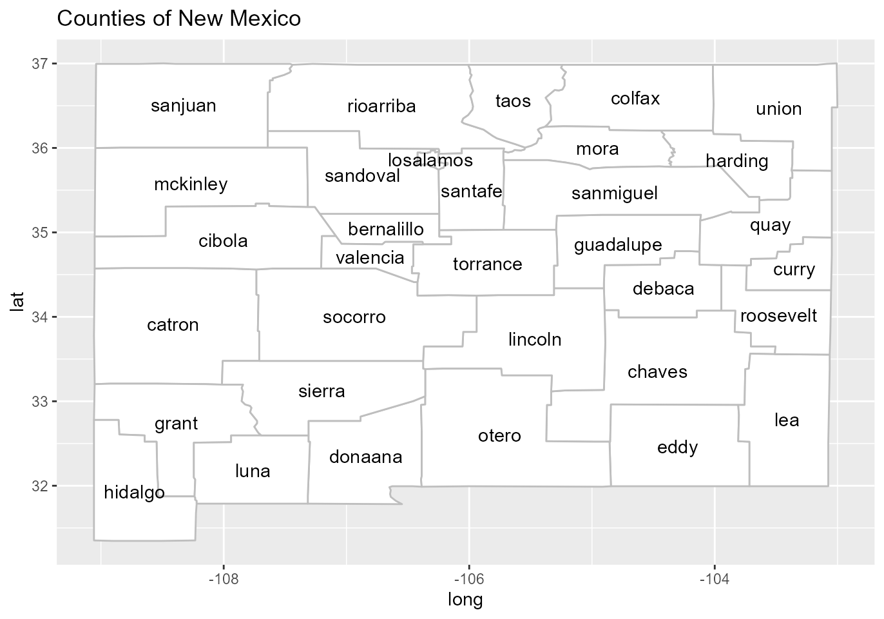
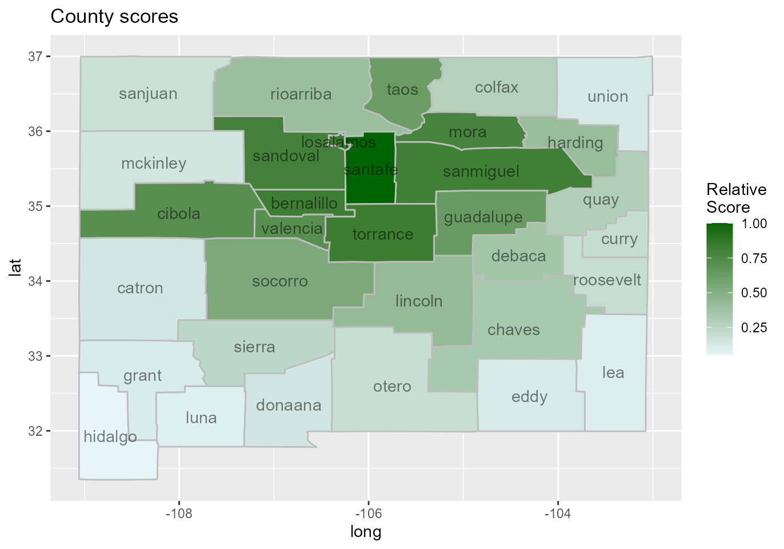

Introduction to scanstatistics
Benjamin Allévius
2022-04-18
Source:vignettes/introduction.Rmd
introduction.RmdWhat are scan statistics?
Scan statistics are used to detect anomalous clusters in spatial or space-time data. The gist of the methodology, at least in this package, is this:
- Monitor one or more data streams at multiple locations over intervals of time.
- Form a set of space-time clusters, each consisting of (1) a collection of locations, and (2) an interval of time stretching from the present to some number of time periods in the past.
- For each cluster, compute a statistic based on both the observed and the expected responses. Report the clusters with the largest statistics.
Main functions
Scan statistics
-
scan_eb_poisson: computes the expectation-based Poisson scan statistic (Neill et al. 2005). -
scan_pb_poisson: computes the (population-based) space-time scan statistic (Kulldorff 2001). -
scan_eb_negbin: computes the expectation-based negative binomial scan statistic (Tango, Takahashi, and Kohriyama 2011). -
scan_eb_zip: computes the expectation-based zero-inflated Poisson scan statistic (Allévius and Höhle 2017). -
scan_permutation: computes the space-time permutation scan statistic (Kulldorff et al. 2005). -
scan_bayes_negbin: computes the Bayesian Spatial scan statistic (Neill, Moore, and Cooper 2006), extended to a space-time setting.
Zone creation
-
knn_zones: Creates a set of spatial zones (groups of locations) to scan for anomalies. Input is a matrix in which rows are the enumerated locations, and columns the \(k\) nearest neighbors. To create such a matrix, the following two functions are useful:-
coords_to_knn: usestats::distto get the \(k\) nearest neighbors of each location into a format usable byknn_zones. -
dist_to_knn: use an already computed distance matrix to get the \(k\) nearest neighbors of each location into a format usable byknn_zones.
-
-
flexible_zones: An alternative toknn_zonesthat uses the adjacency structure of locations to create a richer set of zones. The additional input is an adjacency matrix, but otherwise works asknn_zones.
Miscellaneous
-
score_locations: Score each location by how likely it is to have an ongoing anomaly in it. This score is heuristically motivated. -
top_clusters: Get the top \(k\) space-time clusters, either overlapping or non-overlapping in the spatial dimension. -
df_to_matrix: Convert a data frame with data for each location and time point to a matrix with locations along the column dimension and time along the row dimension, with the selected data as values.
Example: Brain cancer in New Mexico
To demonstrate the scan statistics in this package, we will use a dataset of the annual number of brain cancer cases in the counties of New Mexico, for the years 1973-1991. This data was studied by Kulldorff et al. (1998), who detected a cluster of cancer cases in the counties Los Alamos and Santa Fe during the years 1986-1989, though the excess of brain cancer in this cluster was not deemed statistically significant. The data originally comes from the package rsatscan (Kleinman 2015), which provides an interface to the program SaTScan, but it has been aggregated and extended for the scanstatistics package.
To get familiar with the counties of New Mexico, we begin by plotting them on a map using the data frames NM_map and NM_geo supplied by the scanstatistics package:
## Registered S3 method overwritten by 'ggplot2':
## method from
## print.element sets
# Load map data
data(NM_map)
data(NM_geo)
# Plot map with labels at centroids
ggplot() +
geom_polygon(data = NM_map,
mapping = aes(x = long, y = lat, group = group),
color = "grey", fill = "white") +
geom_text(data = NM_geo,
mapping = aes(x = center_long, y = center_lat, label = county)) +
ggtitle("Counties of New Mexico")
We can further obtain the yearly number of cases and the population for each country for the years 1973-1991 from the data table NM_popcas provided by the package:
## year county population count
## 1 1973 bernalillo 353813 16
## 2 1974 bernalillo 357520 16
## 3 1975 bernalillo 368166 16
## 4 1976 bernalillo 378483 16
## 5 1977 bernalillo 388471 15
## 6 1978 bernalillo 398130 18It should be noted that Cibola county was split from Valencia county in 1981, and cases in Cibola have been counted to Valencia in the data.
A scan statistic for Poisson data
The Poisson distribution is a natural first option when dealing with count data. The scanstatistics package provides the two functions scan_eb_poisson and scan_pb_poisson with this distributional assumption. The first is an expectation-based1 scan statistic for univariate Poisson-distributed data proposed by Neill et al. (2005), and we focus on this one in the example below. The second scan statistic is the population-based scan statistic proposed by Kulldorff (2001).
Theoretical motivation
For the expectation-based Poisson scan statistic, the null hypothesis of no anomaly states that at each location \(i\) and duration \(t\), the observed count is Poisson-distributed with expected value \(\mu_{it}\): \[ H_0 \! : Y_{it} \sim \textrm{Poisson}(\mu_{it}), \] for locations \(i=1,\ldots,m\) and durations \(t=1,\ldots,T\), with \(T\) being the maximum duration considered. Under the alternative hypothesis, there is a space-time cluster \(W\) consisting of a spatial zone \(Z \subset \{1,\ldots,m\}\) and a time window \(D = \{1, 2, \ldots, d\} \subseteq \{1,2,\ldots,T\}\) such that the counts in \(W\) have their expected values inflated by a factor \(q_W > 1\) compared to the null hypothesis: \[ H_1 \! : Y_{it} \sim \textrm{Poisson}(q_W \mu_{it}), ~~(i,t) \in W. \] For locations and durations outside of this window, counts are assumed to be distributed as under the null hypothesis. Calculating the scan statistic then involves three steps:
- For each space-time window \(W\), find the maximum likelihood estimate of \(q_W\), treating all \(\mu_{it}\)’s as constants.
- Plug the estimated \(q_W\) into (the logarithm of) a likelihood ratio with the likelihood of the alternative hypothesis in the numerator and the likelihood under the null hypothesis (in which \(q_W=1\)) in the denominator, again for each \(W\).
- Take the scan statistic as the maximum of these likelihood ratios, and the corresponding window \(W^*\) as the most likely cluster (MLC).
Using the Poisson scan statistic
The first argument to any of the scan statistics in this package should be a matrix (or array) of observed counts, whether they be integer counts or real-valued “counts.” In such a matrix, the columns should represent locations and the rows the time intervals, ordered chronologically from the earliest interval in the first row to the most recent in the last. In this example we would like to detect a potential cluster of brain cancer in the counties of New Mexico during the years 1986-1989, so we begin by retrieving the count and population data from that period and reshaping them to a matrix using the helper function df_to_matrix:
##
## Attaching package: 'dplyr'## The following objects are masked from 'package:stats':
##
## filter, lag## The following objects are masked from 'package:base':
##
## intersect, setdiff, setequal, union
counts <- NM_popcas %>%
filter(year >= 1986 & year < 1990) %>%
df_to_matrix(time_col = "year", location_col = "county", value_col = "count")Spatial zones
The second argument to scan_eb_poisson should be a list of integer vectors, each such vector being a zone, which is the name for the spatial component of a potential outbreak cluster. Such a zone consists of one or more locations grouped together according to their similarity across features, and each location is numbered as the corresponding column index of the counts matrix above (indexing starts at 1).
In this example, the locations are the counties of New Mexico and the features are the coordinates of the county seats. These are made available in the data table NM_geo. Similarity will be measured using the geographical distance between the seats of the counties, taking into account the curvature of the earth. A distance matrix is calculated using the spDists function from the sp package, which is then passed to dist_to_knn (with \(k=15\) neighbors) and on to knn_zones:
library(sp)
library(magrittr)
# Remove Cibola since cases have been counted towards Valencia. Ideally, this
# should be accounted for when creating the zones.
zones <- NM_geo %>%
filter(county != "cibola") %>%
select(seat_long, seat_lat) %>%
as.matrix %>%
spDists(x = ., y = ., longlat = TRUE) %>%
dist_to_knn(k = 15) %>%
knn_zonesBaselines
The advantage of expectation-based scan statistics is that parameters such as the expected value can be modelled and estimated from past data e.g. by some form of regression. For the expectation-based Poisson scan statistic, we can use a (very simple) Poisson GLM to estimate the expected value of the count in each county and year, accounting for the different populations in each region. Similar to the counts argument, the expected values should be passed as a matrix to the scan_eb_poisson function:
mod <- glm(count ~ offset(log(population)) + 1 + I(year - 1985),
family = poisson(link = "log"),
data = NM_popcas %>% filter(year < 1986))
ebp_baselines <- NM_popcas %>%
filter(year >= 1986 & year < 1990) %>%
mutate(mu = predict(mod, newdata = ., type = "response")) %>%
df_to_matrix(value_col = "mu")Note that the population numbers are (perhaps poorly) interpolated from the censuses conducted in 1973, 1982, and 1991.
Calculation
We can now calculate the Poisson scan statistic. To give us more confidence in our detection results, we will perform 999 Monte Carlo replications, by which data is generated using the parameters from the null hypothesis and a new scan statistic calculated. This is then summarized in a \(P\)-value, calculated as the proportion of times the replicated scan statistics exceeded the observed one. The output of scan_poisson is an object of class “scanstatistic,” which comes with the print method seen below.
set.seed(1)
poisson_result <- scan_eb_poisson(counts = counts,
zones = zones,
baselines = ebp_baselines,
n_mcsim = 999)
print(poisson_result)## Data distribution: Poisson
## Type of scan statistic: expectation-based
## Setting: univariate
## Number of locations considered: 32
## Maximum duration considered: 4
## Number of spatial zones: 415
## Number of Monte Carlo replicates: 999
## Monte Carlo P-value: 0.005
## Gumbel P-value: NULL
## Most likely event duration: 4
## ID of locations in MLC: 15, 26As we can see, the most likely cluster for an anomaly stretches from 1986-1989 and involves the locations numbered 15 and 26, which correspond to the counties
counties <- as.character(NM_geo$county)
counties[c(15, 26)][1] "losalamos" "santafe" These are the same counties detected by Kulldorff et al. (1998), though their analysis was retrospective rather than prospective as ours was. Ours was also data dredging as we used the same study period with hopes of detecting the same cluster.
A heuristic score for locations
We can score each county according to how likely it is to be part of a cluster in a heuristic fashion using the function score_locations, and visualize the results on a heatmap as follows:
# Calculate scores and add column with county names
county_scores <- score_locations(poisson_result, zones)
county_scores %<>% mutate(county = factor(counties[-length(counties)],
levels = levels(NM_geo$county)))
# Create a table for plotting
score_map_df <- merge(NM_map, county_scores, by = "county", all.x = TRUE) %>%
arrange(group, order)
# As noted before, Cibola county counts have been attributed to Valencia county
score_map_df[score_map_df$subregion == "cibola", ] %<>%
mutate(relative_score = score_map_df %>%
filter(subregion == "valencia") %>%
select(relative_score) %>%
.[[1]] %>% .[1])
ggplot() +
geom_polygon(data = score_map_df,
mapping = aes(x = long, y = lat, group = group,
fill = relative_score),
color = "grey") +
scale_fill_gradient(low = "#e5f5f9", high = "darkgreen",
guide = guide_colorbar(title = "Relative\nScore")) +
geom_text(data = NM_geo,
mapping = aes(x = center_long, y = center_lat, label = county),
alpha = 0.5) +
ggtitle("County scores")
A warning though: the score_locations function can be quite slow for large data sets. This might change in future versions of the package.
Finding the top-scoring clusters
Finally, if we want to know not just the most likely cluster, but say the five top-scoring space-time clusters, we can use the function top_clusters. The clusters returned can either be overlapping or non-overlapping in the spatial dimension, according to our liking.
top5 <- top_clusters(poisson_result, zones, k = 5, overlapping = FALSE)
# Find the counties corresponding to the spatial zones of the 5 clusters.
top5_counties <- top5$zone %>%
purrr::map(get_zone, zones = zones) %>%
purrr::map(function(x) counties[x])
# Add the counties corresponding to the zones as a column
top5 %<>% mutate(counties = top5_counties)The top_clusters function includes Monte Carlo and Gumbel \(P\)-values for each cluster. These \(P\)-values are conservative, since secondary clusters from the original data are compared to the most likely clusters from the replicate data sets.
Concluding remarks
Other univariate scan statistics can be calculated practically in the same way as above, though the distribution parameters need to be adapted for each scan statistic.
Feedback
If you think this package lacks some functionality, or that something needs better documentation, please open an issue here. I’m also very interested in applying the methods in this package (current and future) to new problems, so if you know of any suitable public datasets, please tell me! A dataset with a multivariate response (e.g. multiple counter variables) would be of particular interest.